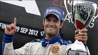

Porsche Carrera Cup Scandinavia is a one make sports car racing championship held in the Scandinavian countries with the majority of the races being in Sweden.
The cars are Porsche 911 GT3 Cup (Type 997) with 3.6 liters, flat-6 naturally aspirated engines that produce 420 bhp (310 kW) and 420 N·m.
Prince Carl Philip has taken part in the racing series Porsche Carrera Cup Scandinavia for the first time in 2008.
Since then he participated in this race three more times 2009, 2010 and 2011. since 2013 he started racing in the Scandinavian Touring Car Championship.
In 2008 he placed 27th and was racing for team Flash Engineering, in 2009 he placed 15th racing for the same team.
In 2010 and 2011 he raced for the same team and finished in 11th place in both.